Bem-vinda ao nosso espaço dedicado a mulheres independentes que amam a Culinária
Aqui, celebramos a força e a criatividade feminina na cozinha, oferecendo
receitas deliciosas, dicas práticas e inspirações para todas que buscam
explorar seu potencial culinário. Junte-se a nós nessa jornada de sabores,
onde cada prato conta uma história e cada receita é uma oportunidade
de se expressar.
Vamos cozinhar, aprender e nos apoiar mutuamente!
Dicas de Cozinha
Tudo em Ordem: Organize todos os ingredientes e utensílios antes de começar a cozinhar. Isso facilita o processo e evita esquecimentos.
Temperos e Ervas: Use temperos frescos sempre que possível. Eles realçam o sabor dos pratos. Experimente misturas de ervas para criar novos sabores.
Limpeza Durante o Preparo: Lave utensílios e limpe a bancada enquanto cozinha. Isso facilita a limpeza final e mantém o ambiente organizado.
Corte Eficiente: Aprenda cortes básicos de legumes e frutas para agilizar o preparo. Cebolas em cubos, cenouras em tiras, etc.
Texte de Sabor: Prove os pratos ao longo do preparo. Isso ajuda a ajustar temperos e garantir que o resultado final seja saboroso.
Cozimento em Lotes: Prepare refeições em grandes quantidades e congele porções. Isso economiza tempo durante a semana.
Experimente Novos Ingredientes: Não tenha medo de experimentar. Incorporar novos ingredientes pode levar a descobertas deliciosas.
Preparação Antecipada: Deixe ingredientes pré-preparados, como legumes cortados ou marinadas, prontos para uso.
Coloque o arroz e deixe fritar por cerca de 30 segundos.
Adicione a água fervente e o sal.
Abaixe o fogo e deixe cozinhar até a água quase secar.
Tampe a panela e aguarde cerca de 20 minutos antes de servir.
Se desejar fazer mais, é só seguir as proporções, principalmente da água.
Feijão
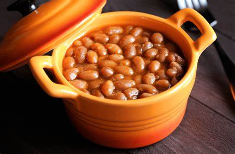
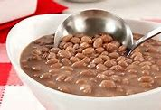
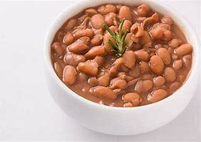
Ingredientes
2 copos de feijão (cerca de 500 g).
1 dente de alho picado.
Calabresa a gosto.
Sal a gosto.
Água a gosto.
1 xícara de cebola bem picadinha.
Bacon a gosto.
Modo de Preparo
Separe e lave o feijão. Deixe-o de molho em uma bacia com água de um dia para o outro. Se estiver com pressa pode ferver 1 litro de água e deixar o feijão de molho nessa água por cerca de 2 horas.
Despeje o feijão amolecido em uma panela de pressão e complete com água até a metade da panela.
Tampe a panela e deixe em fogo alto. Quando pegar pressãor conte 20 minutos.
Passados os 20 minutos, deixe a panela de pressão esfriar por uns 10 minutos e depois abra a tampa.
Corte a calabresa e o bacon em cubinhos. Coloque ambos em uma panela e deixe fritar por alguns minutos, acrescente o alho picado e a cebola. Depois junte o feijão.
Adicione o sal, se você colocou a calabreza e o bacon, diminua no sal, pois eles já são salgados.
Deixe o feijão no fogo alto até abrir fervura e vá mexendo aos poucos, até o caldo engrossar.
Macarrão
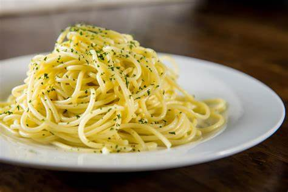
Ingredientes
250g de macarrão (meio pacote).
2 litors e meio de Água.
100ml de azeite (ou óleo).
5 dentes de alho.
1 colher de (sopa) de sal.
salsinha a gosto (picada).
160ml de Água quente.
Modo de Preparo
Antes de começar, fatie todo o alho ou pique. Reserve.
Em uma panela grande, coloque a água e deixe em fogo alto.
Quando começar a ferver, coloque o macarrão de uma só vez.
DICA: coloque como se fosse um pega varetas (jogo), o segredo é não mexer muito.
Conforme o macarrão for amolecendo, mexa para que fique todo dentro da panela.
Deixe cozinhar até que o macarrão fique al dente (cerca de 4 a 8 minutos).
DICA: o tempo exato do cozimento de cada tipo de macarrão, vai estar descrito na embalagem.
Desligue o fogo e transfira o macarrão para uma peneira e escorra a água quente.
Enquanto o macarrão escorre, coloque o azeite em uma frigideira e adicione o alho, com o azeite ainda frio.
Leve ao fogo médio e mexa até começar a dourar.
Desligue o fogo e aguarde o óleo esfriar um pouco,
pegue duas conchas de água quente e transfira para o óleo com o alho,
que deve estar morno.
Em seguida adicione o macarrão escorrido, a salsinha e misture bem, por 1 minutinho.
Escondidinho
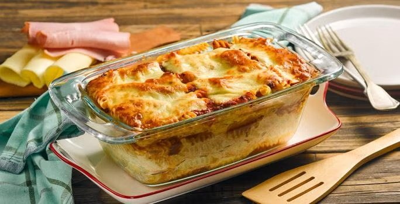
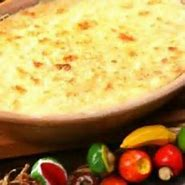
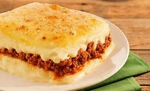
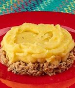
Ingredientes
1 kg de batata.
200 g de queijo mussarela.
1 cebola.
sal a gosto.
2 colheres de manteiga.
500 g de carne moída.
azeite.
1 dente de alho amassado.
1/2 copo de leite.
Modo de Preparo
Descasque as batatas, corte ao meio e cozinhe com água e sal.
Depois de cozidas, amasse as batatas, adicione o leite e a manteiga, mexa bem até formar um purê e reserve.
Em uma panela, adicione 1 fio de azeite, a cebola, o alho e refogue a carne moída.
Tempere com sal, pimenta branca, cheiro-verde e cozinhe até secar a água que se formar na panela.
Forre um refratário com a metade do purê de batatas.
Acrescente uma camada de queijo e uma camada de carne moída.
Repita o processo e finalize com queijo ralado por cima.
Leve ao forno por 40 minutos.
Panqueca
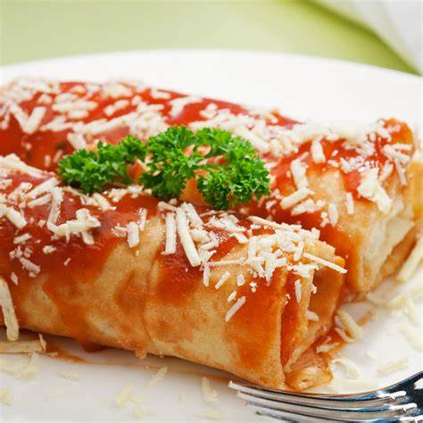
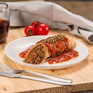
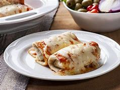
Ingredientes
1 e 1/2 xícara (chá) de farinha de trigo.
2 ovos.
sal a gosto.
2 colheres (sopa) de cebola picada ou ralada.
1/2 lata de extrato de tomate.
queijo ralado a gosto.
1 xícara (chá) de leite.
4 colheres (sopa) de óleo.
300 g de carne moída.
400 g de muçarela fatiado.
Modo de preparo
Massa
Bata no liquidificador os ovos, o leite, o óleo, e acrescente a farinha de trigo aos poucos.
Após acrescentar toda a farinha de trigo, adicione sal a gosto, e misture a massa até obter uma consistência cremosa.
Com um papel-toalha, espalhe óleo por toda a frigideira e despeje uma concha de massa.
Faça movimentos circulares para que a massa se espalhe por toda a frigideira.
Espere até a massa soltar do fundo e vire a massa para fritar do outro lado.
Recheio
Em uma panela, doure a cebola com o óleo e acrescente a carne, deixe cozinhar até que saia água da carne, diminua o fogo e tampe.
Acrescente o tomate picado e tampe novamente, e deixe cozinhar por mais 3 minutos e misture.
Acrescente o extrato de tomate e temperos a gosto.
Deixe cozinhar por mais 10 minutos, e Quando o molho engrossar, desligue o fogo.
Montagem
Recheie a panqueca com uma fatia de mussarela, uma porção de carne e enrole, faça esse processo com todas as panquecas.
Polvilhe queijo ralado sobre as panquecas.
Strogonoff
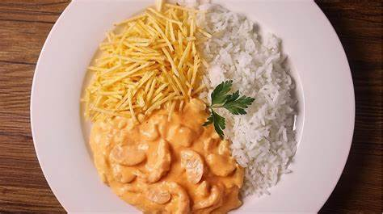
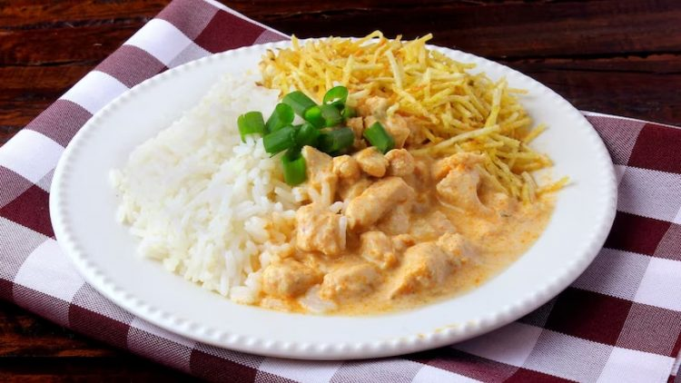
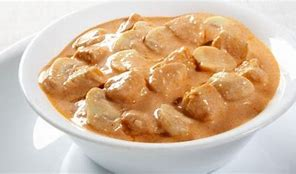
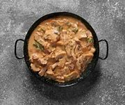
Ingredientes
3 peitos de frango cortados em cubos.
sal a gosto.
1 cebola picada.
1 colher de manteiga.
1/3 copo de mostarda.
1 copo de creme de leite.
1 dente de alho picado.
pimenta-do-reino a gosto.
1/2 copo de ketchup.
batata palha a gosto.
Modo de Preparo
Em uma panela, misture o frango, o alho, o sal e a pimenta.
Em uma frigideira grande, derreta a manteiga e doure a cebola.
Junte o frango temperado até que esteja dourado.
Adicione o ketchup e a mostarda.
Incorpore o creme de leite e retire do fogo antes de ferver.
Sirva com arroz branco e batata palha.
Lasanha
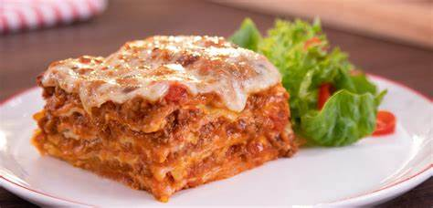
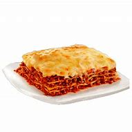
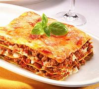
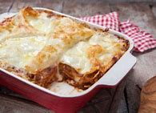
Ingredientes
250 g de massa de lasanha pronta pré-cozida.
1 kg de carne moída.
400 g de molho de tomate pronto.
300 g de presunto.
350 g de queijo mussarela.
4 dentes de alho picados.
Sal à gosto.
Óleo (4 ou 5 colheres de sopa).
Cheiro-verde picado a gosto.
1 cebola grande picada.
Azeitonas verdes picadas.
Orégano.
2 sachês de Sazon de carne.
Modo de Preparo
Coloque em uma panela o óleo, refogue a cebola, o alho, as azeitonas, o orégano e o cheiro-verde.
Coloque a carne moída e mexa, acrescente o Sazón e o sal,e misture mais um pouco.
Por último coloque o molho de tomate e mexa.
Em uma travessa espalhe um pouco da carne.
Coloque uma camada de massa.
Uma camada de carne novamente, e uma camada de presunto, e uma camada de queijo mussarelas.
Uma de carne e assim por diante até terminar com uma camada de queijo ou de carne.
Forrar com folha de alumínio e levar ao forno por mais ou menos uns vinte e cinco minutos. Espete um garfo para ver se a massa já está mole.
Carne de Panela
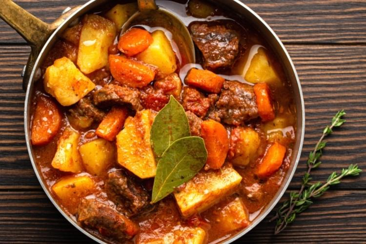
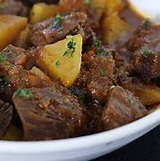
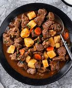
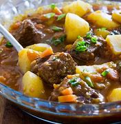
Ingredientes
2 colheres (sopa) de cebola granulada.
2 colheres (sopa) de azeite (ou óleo).
1kg de carne cortada em cubos (carne de sua preferência).
400ml de Água (aproximadamente).
sal a gosto.
2 cubos de caldo natural.
colorau a gosto.
cheiro-verde desidratado a gosto.
5 de batatas (sem casca e cortada em cubos médios).
Modo de preparo
Em uma panela de pressão coloque o óleo e a cebola, deixe até que ela fique bem moreninha.
Junte a carne cortada em cubos médios, deixe dourar por 15 minutos.
Junte os 2 cubos de caldo natural e o colorau a gosto.
Coloque a água até que cubra a carne, não ultrapasse a carne.
Coloque na pressão por 25 minutos.
Retire do fogo, tire a pressão e junte as batatas e o cheiro-verde.
Coloque na pressão novamente, conte 5 minutos após a panela de pressão começar a apitar e desligue o fogo.
Sobremesas
Brigadeiro
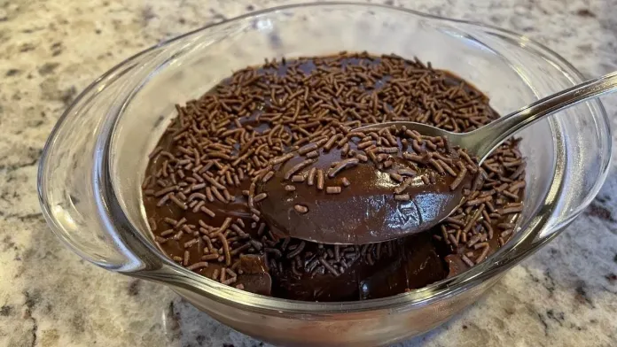
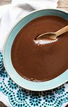
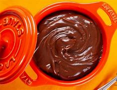
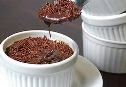
Ingredientes
1 lata de leite condensado.
4 colheres de chocolate em pó.
1 colher de margarina.
Chocolate granulado para decorar.
Modo de Preparo
Coloque a manteiga em uma panela e espere derreter.
Coloque o leite condesado e o chocolate em pó e deixe em fogo médio.
deixe até quando estiver soltando da panela.
coloque em um recipiente, e por cima coloque o granulado.
Bolo de Chocolate
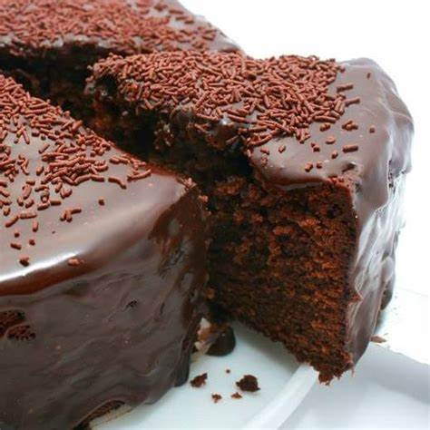
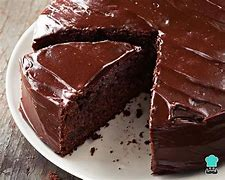
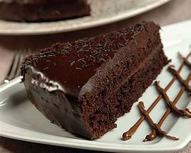
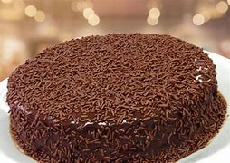
Ingredientes
2 xícaras de farinha de trigo.
3 xícara de leite.
1 colher (sopa) de fermento em pó.
2 xícaras de açúcar.
6 colheres (sopa) de chocolate em pó.
6 ovos.
2 colheres (sopa) de manteiga.
1 xícara de chocolate em pó.
Modo de Preparo
Massa
Em uma batedeira, bata as claras em neve.
Acrescente as gemas, o açúcar e bata novamente.
Adicione a farinha, o chocolate em pó, o fermento, o leite e bata por mais alguns minutos.
Despeje a massa em uma forma untada e leve para assar em forno médio (180° C), preaquecido, por 40 minutos.
Cobertura
Em uma panela, leve a fogo médio o chocolate em pó, a manteiga e o leite, deixe até ferver.
Despeje quente sobre o bolo já assado.
Gelatina
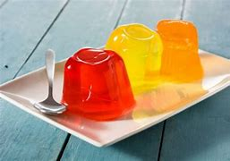
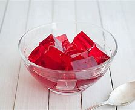
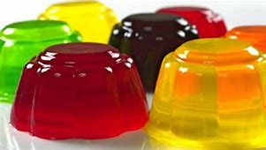
Ingredientes
1 pacote de geletina (o sabor que você quiser).
250 ml de água quente.
250 ml de água fria.
Modo de Preparo
Dissolva a gelatina em 250 ml de água quente e depois adicione os outros 250 ml de água fria e reserve.
É só levar à geledeira até endurecer.
Pudim
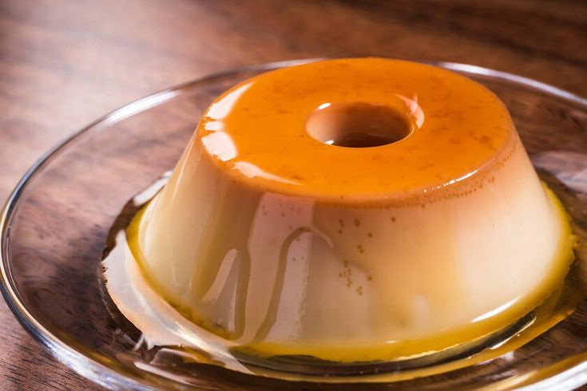
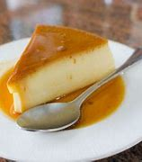
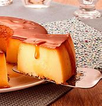
Ingredientes
1 lata de leite condensado.
1 lata de leite (medida da lata de leite condensado).
3 ovos inteiros.
1 xícara (chá) de açúcar.
1/2 xícara de água.
Modo de Preparo
Pudim
Primeiro, bata bem os ovos no liquidificador.
Acrescente o leite condensado e o leite, e bata novamente.
Calda
Derreta o açúcar na panela até ficar moreno, acrescente a água e deixe engrossar.
Coloque em uma forma redonda e despeje a massa do pudim por cima.
Asse em forno médio por 45 minutos, com a assadeira redonda dentro de uma maior com água.
Espete um garfo para ver se está bem assado.
Deixe esfriar e desenforme.
Mousse de Maracujá
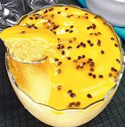
Ingredientes
1 lata de leite condensado.
1 lata de creme de leite.
1 lata de suco de maracujá (medida pela lata de leite condensado).
Modo de Preparo
Em um liquidificador, bata o creme de leite, o leite condensado e o suco concentrado de maracujá.
Em uma tigela, despeje a mistura e leve à geladeira por, no mínimo, 4 horas.
Brownie
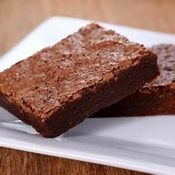
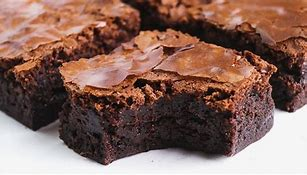
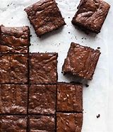
Ingredientes
6 colheres (sopa) bem cheias, de margarina sem sal.
1/2 xícara (chá) chocolate em pó.
2 xícaras (chá) açúcar.
2 pitadas de sal.
1 tablete de chocolate meio amargo picado em cubinhos.
3/4 xícara (chá) achocolatado.
1 e 1/4 xícara (chá) farinha de trigo.
4 ovos.
Modo de Preparo
Misture os ovos e o açúcar.
Em seguida, agregue todos os outros ingredientes até formar um creme uniforme.
Despeje em uma assadeira, forrada com papel-manteiga e leve ao forno médio por 40 minutos.
O brownie estará pronto quando a parte de cima estiver levemente corada e, ao se espetar um palito, ele esteja levemente úmido (devido ao chocolate derretido).
Corte em quadrados ainda quente e sirva com uma bola de sorvete de creme, ou congele num saquinho para freezer.
Para descongelar, coloque o brownie num prato de sobremesa e aqueça no micro-ondas, potência alta, por 1 minuto.
Churros
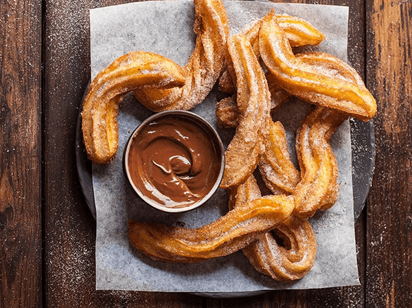
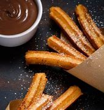
Ingredientes
1 e 1/2 xícara (chá) de leite.
2 colheres (sopa) de margarina ou manteiga.
sal a gosto.
canela a gosto.
1/2 xícara (chá) de água.
2 xícaras (chá) de farinha de trigo.
açúcar a gosto.
Modo de Preparo
Em uma panela, adicione o leite, a água, a manteiga e o sal.
Quando o leite ferver, adicione a farinha de trigo e mexa rápido até a massa soltar do fundo da panela.
Coloque a massa em um saco de confeiteiro com o bico pitanga, depois faça tirinhas com a massa e frite.
Misture a canela e o açúcar, depois passe nos churros fritos.
Bombom de Uva
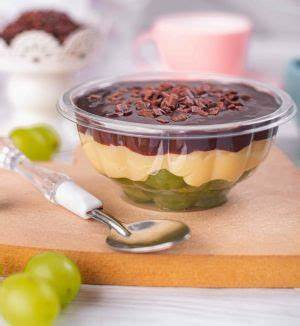
Ingredientes
700 g de uva thompson.
1 e 1/2 caixa de creme de leite.
2 latas de leite condensado.
1 colher (sopa) de margarina.
200 g de chocolate meio amargo.
Modo de Preparo
Solte as uvas do cacho, lave-as, seque bem e reserve.
Em uma panela, coloque o leite condensado e a margarina e leve ao fogo médio mexendo sempre até soltar do fundo da panela.
Deixe esfriar, adicione 1/2 caixinha de creme de leite e reserve.
Em uma panela, quebre o chocolate em pedaços e leve ao fogo em banho-maria até que esteja completamente derretido.
Acrescente o creme de leite e misture bem.
Em um refratário, coloque todo o creme branco, forre o creme com as uvas e despeje a ganache de chocolate por cima.
Leve à geladeira, decore como desejar e sirva gelado.
Chegamos ao fim da página!
Agradecemos por acompanhar nossas receitas elaboradas com cuidado, pensando em você.


 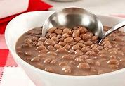
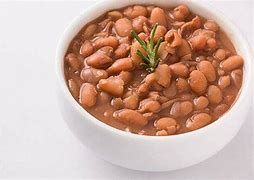
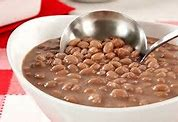
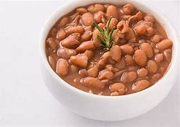
 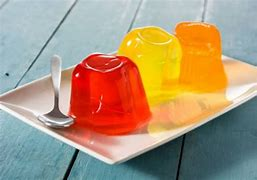
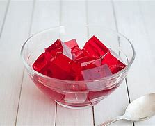
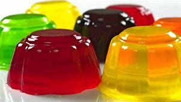
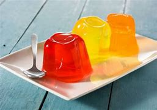
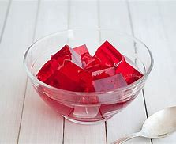
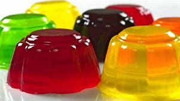
 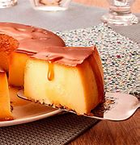
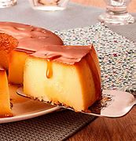
 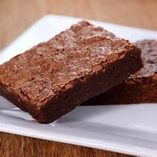
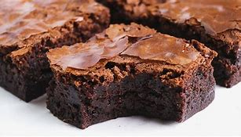
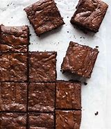
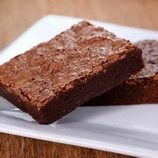
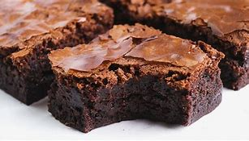
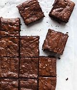